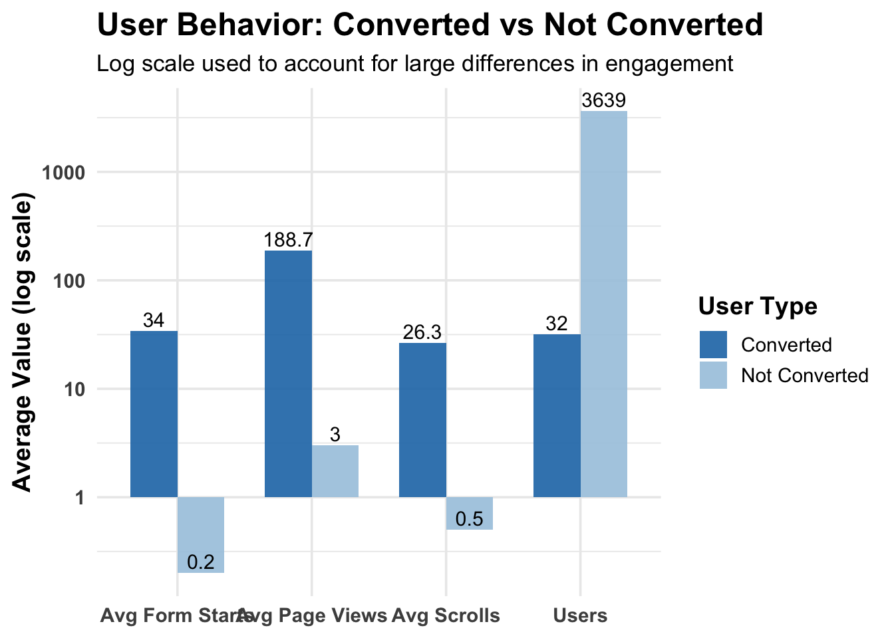

This codebook documents the data preparation, descriptive summaries, visualization, and logistic regression modeling used to examine behavioral differences between users who converted and users who did not convert on the TRI website.
The goal is to identify which engagement behaviors are most strongly associated with conversion.
Note
This document is designed as a transparent analytical appendix. It shows how the data were prepared, how variables were defined, and how the models were estimated.
Libraries
library(tidyverse)
── Attaching core tidyverse packages ──────────────────────── tidyverse 2.0.0 ──
✔ dplyr 1.2.0 ✔ readr 2.1.6
✔ forcats 1.0.0 ✔ stringr 1.6.0
✔ ggplot2 4.0.1 ✔ tibble 3.2.1
✔ lubridate 1.9.5 ✔ tidyr 1.3.2
✔ purrr 1.2.1
── Conflicts ────────────────────────────────────────── tidyverse_conflicts() ──
✖ dplyr::filter() masks stats::filter()
✖ dplyr::lag() masks stats::lag()
ℹ Use the conflicted package (<http://conflicted.r-lib.org/>) to force all conflicts to become errors
library(tibble)library(knitr)library(kableExtra)
Attaching package: 'kableExtra'
The following object is masked from 'package:dplyr':
group_rows
library(broom)library(forcats)
Section 1. Descriptive Comparison Table
Purpose
This section creates a simple behavioral comparison between users who converted and users who did not convert.
Summary Table
table_clean <-tibble(`User Type`=c("Converted", "Not Converted"),`Users`=c(32, 3639),`Avg Page Views`=c(188.7, 3.0),`Avg Scrolls`=c(26.3, 0.5),`Avg Form Starts`=c(34.0, 0.2))table_clean %>%kable(caption ="User Behavior: Converted vs Not Converted",align ="c" ) %>%kable_styling(bootstrap_options =c("striped", "hover", "condensed"),full_width =FALSE )
User Behavior: Converted vs Not Converted
User Type
Users
Avg Page Views
Avg Scrolls
Avg Form Starts
Converted
32
188.7
26.3
34.0
Not Converted
3639
3.0
0.5
0.2
Metric Definitions
metric_definitions <-tibble(Metric =c("Users", "Avg Page Views", "Avg Scrolls", "Avg Form Starts"),Definition =c("Number of users in each group.","Average number of page views per user.","Average number of scroll events per user.","Average number of form start events per user." ))metric_definitions %>%kable(caption ="Metric Definitions",align =c("l", "l") ) %>%kable_styling(bootstrap_options =c("striped", "hover", "condensed"),full_width =FALSE )
Metric Definitions
Metric
Definition
Users
Number of users in each group.
Avg Page Views
Average number of page views per user.
Avg Scrolls
Average number of scroll events per user.
Avg Form Starts
Average number of form start events per user.
Visualization
df_long <- table_clean %>%pivot_longer(cols =-`User Type`,names_to ="Metric",values_to ="Value" )ggplot(df_long, aes(x = Metric, y = Value, fill =`User Type`)) +geom_col(position ="dodge", width =0.7, alpha =0.9) +geom_text(aes(label =round(Value, 1)),position =position_dodge(width =0.7),vjust =-0.3,size =4 ) +scale_fill_manual(values =c("Converted"="#1f77b4", "Not Converted"="#a6c8e0")) +scale_y_log10() +labs(title ="User Behavior: Converted vs Not Converted",subtitle ="Log scale used to account for large differences in engagement",x =NULL,y ="Average Value (log scale)",fill ="User Type" ) +theme_minimal(base_size =14) +theme(plot.title =element_text(face ="bold", size =18),plot.subtitle =element_text(size =13),axis.text =element_text(face ="bold"),axis.title =element_text(face ="bold"),legend.title =element_text(face ="bold") )

::: {.callout-important}
The log scale is used because engagement values for converters are much larger than those for non-converters. Without this adjustment, the lower values would be difficult to compare visually.
:::
Section 2. Data Source and Preparation
Data Source
The dataset used in this section was exported from BigQuery and saved locally as tri_logistic_clean.csv.
Load Data
data <-read_csv("tri_logistic_clean.csv", skip =1, show_col_types =FALSE)
Variable Preparation
data <- data %>%mutate(conversion =as.integer(conversion),device_category =as.factor(device_category),medium =as.factor(medium),medium =fct_explicit_na(medium, na_level ="unknown"),medium =fct_lump_min(medium, min =20),engagement_level =case_when( page_views >10~"High", page_views >3~"Medium",TRUE~"Low" ),engagement_level =factor(engagement_level, levels =c("Low", "Medium", "High")),page_views_log =log1p(page_views),scrolls_log =log1p(scrolls),form_starts_log =log1p(form_starts) )
Warning: There was 1 warning in `mutate()`.
ℹ In argument: `medium = fct_explicit_na(medium, na_level = "unknown")`.
Caused by warning:
! `fct_explicit_na()` was deprecated in forcats 1.0.0.
ℹ Please use `fct_na_value_to_level()` instead.
Variable Codebook
codebook <-tibble(Variable =c("conversion","device_category","medium","engagement_level","page_views_log","scrolls_log","form_starts_log" ),Type =c("Integer / Binary","Factor","Factor","Ordered Factor","Numeric","Numeric","Numeric" ),Definition =c("Outcome variable indicating whether the user converted (1) or not (0).","User device type, such as desktop or mobile.","Traffic acquisition medium, with missing values labeled as unknown and rare categories grouped together.","Engagement tier based on page views: Low, Medium, or High.","Log-transformed page views using log1p().","Log-transformed scroll events using log1p().","Log-transformed form start events using log1p()." ))codebook %>%kable(caption ="Variable Codebook",align =c("l", "l", "l") ) %>%kable_styling(bootstrap_options =c("striped", "hover", "condensed"),full_width =FALSE )
Variable Codebook
Variable
Type
Definition
conversion
Integer / Binary
Outcome variable indicating whether the user converted (1) or not (0).
device_category
Factor
User device type, such as desktop or mobile.
medium
Factor
Traffic acquisition medium, with missing values labeled as unknown and rare categories grouped together.
engagement_level
Ordered Factor
Engagement tier based on page views: Low, Medium, or High.
page_views_log
Numeric
Log-transformed page views using log1p().
scrolls_log
Numeric
Log-transformed scroll events using log1p().
form_starts_log
Numeric
Log-transformed form start events using log1p().
Section 3. Logistic Regression Models
Model 1: Behavioral Model
This model estimates the relationship between conversion and user behavior using log-transformed engagement measures plus device and traffic source controls.
Users who convert show substantially higher engagement across all tracked behaviors. The regression models help evaluate whether these patterns remain meaningful after accounting for device type and traffic medium.
:::
::: {.callout-note}
Because the converted group is much smaller than the non-converted group, results should be interpreted carefully. Strong associations do not necessarily imply causation.